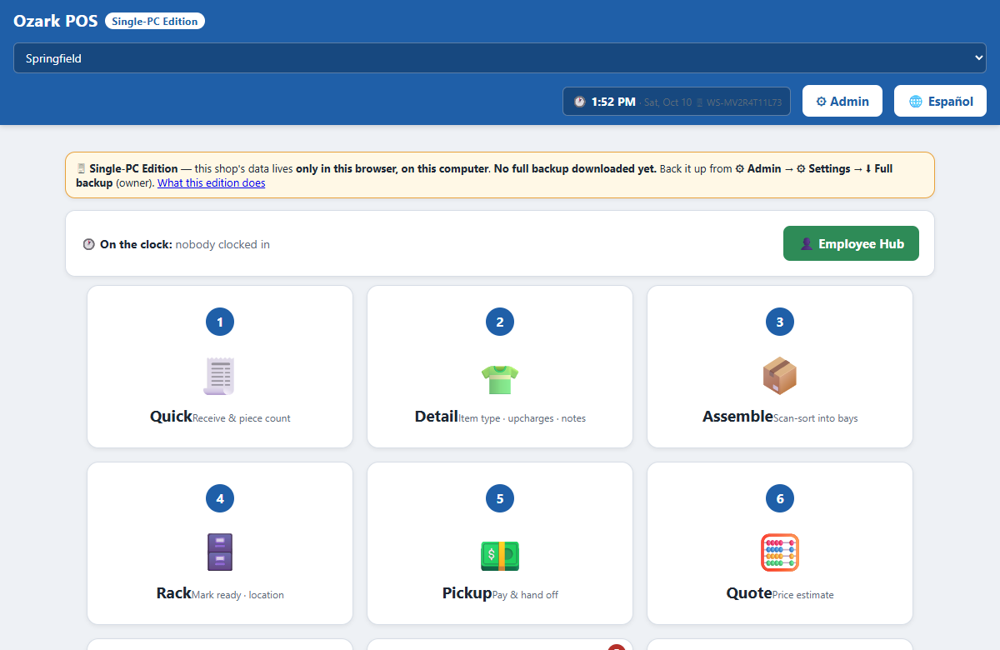

The point of sale that ran a two-store wet cleaner from June to September 2026 — now a single HTML file. Download it, double-click it, and run a one-counter shop on one PC. No server, no subscription, no sign-up.
One .html file, about 2.1 MB · built and tested in Google Chrome (Microsoft Edge uses the same engine) · trying it online keeps everything in your own browser, nothing is sent to us

Nothing to install, nothing to sign up for. If you can open a file, you can run it.
One file, ozark-pos-single-pc.html. Keep it somewhere you'll find it, like the desktop.
It opens in your web browser. Use Chrome or Edge, and open it the same way every time — that browser keeps your shop's data.
Use a sample PIN, then change them in Admin → Employees and put your shop's name, address and tax rate in Admin → Settings → Stores.
Owner 1234 · Manager 2222 · Front Counter 1111
This is the app that ran the shop, not a demo of it. Only the parts that needed a server are switched off.
Quick drop-off, detail each piece, assemble into bays, rack it, and hand it off at pickup — with promise dates and quotes.
Customers who run a tab, collections, and printed statements.
Drawer check-in and close, and the day's numbers when you lock up.
PIN clock-in for staff, hours, and payroll.
Pickup-and-delivery customers by route and day.
Run the card on your stand-alone terminal, type the approval code, and it's recorded. Cash and check work too.
Only in the browser, on that one computer. It saves on every change and is not copied anywhere else. That is why it is private and runs with no internet — and it means a dead computer, or clearing the browser's site data, takes the shop's data with it.
So back up often. Admin → Settings → Full backup (everything) downloads the whole shop as one file. The home screen shows when you last did it, and turns amber after a week.
The honest weak spot: there is no one-click restore. The original app never needed one, because its server kept the copies. Your backup file is complete, but loading it back in currently takes someone comfortable with code.
These need a server, so this edition hides them instead of letting them fail. Nothing in the file ever contacts a server.
The shop that ran this version now runs on its successor, built for several computers at once. A modular multi-station edition built from that newer system is the next step for customPOS. It isn't ready yet — this page will say so when it is.
Yes. It is MIT-licensed: free to use, change and give away. There is no account, no subscription and no trial period.
No. It is one HTML file that runs in your browser and saves to the computer it runs on. It never contacts a server: every network call is refused before it leaves the browser.
In the browser on that one computer, and nowhere else. Open the file the same way every time, because another browser or a private window starts with an empty shop.
Admin → Settings → Full backup downloads the whole shop as one file. Keep copies somewhere else. There is no one-click restore in this edition: today, loading a backup back in takes someone comfortable with code.
Yes, with your own stand-alone card terminal. Run the card on the terminal, then type the approval code into the POS and it records the payment. The POS never charges a card by itself.
Not in this edition. Sharing a shop across computers, texting customers and a connected card reader all need a server. A modular multi-station edition, built from the shop's newer system, is the next step.
It was built for a wet cleaner, and its screens speak that trade. For another kind of business, the customPOS builder makes a point of sale from a template for your trade.
Nobody's. It starts with no customers and no orders, three sample staff, placeholder store details and sample prices. Every real customer, employee, phone number, address and payment reference from the original shop was replaced before release.
Want a point of sale for a different trade, or one you design yourself? Build one with customPOS → · Dry cleaner POS builder · The full read-me